At a high level, model checking is a computer assisted method for the analysis of dynamical systems that can be modeled as discrete state transition systems (Edmund M. Clarke, Henzinger, and Veith 2018). In the basic setting, we can view the model checking problem as taking in a transition system (e.g. a Kripke structre) \(K\) and some system specification \(\upvarphi\) (typically specified in some temporal logic) and verifying whether \[\begin{aligned} K \vDash \upvarphi\end{aligned}\] and, if \(K \nvDash \upvarphi\), returning a counterexample. In the basic scenario, we can assume \(K\) is finite state.
There are a variety of temporal logics that have been used to reason about properties of programs/systems. A high level overview is shown in the relationship diagram below, where CTL* is one of the most expressive logics (encompassing both CTL and LTL).
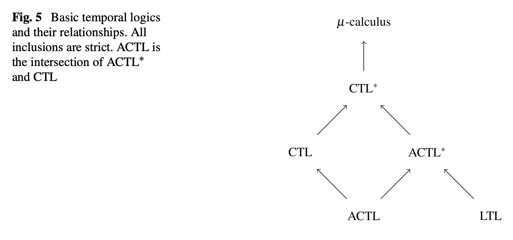
In practice, I don’t think it’s that important to worry much about the finer distinctions between the various logics, since typically I am more concerned with how to express a desired correctness property (e.g. for which LTL may often be sufficient). Nevertheless, it is good to have a general view of the classification hierarchy to understand the landscape (and since various papers may choose to express/formalize things in different choices of logics).
The below diagram also shows the relationship between LTL, CTL, and CTL*. Namely, that LTL and CTL are not directly comparable, and CTL* subsumes them both.
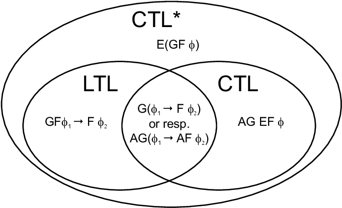
The following diagram (Edmund M. Clarke, Henzinger, and Veith 2018) also provides a good overview of common varieties of temporal logic properties and their counterexample characterizations.
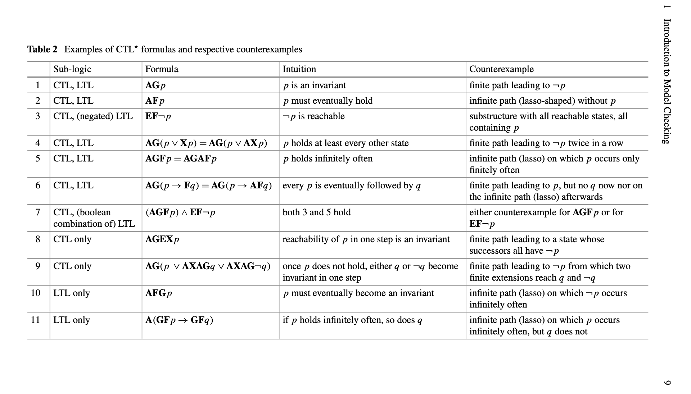
For computation tree logic (CTL), there is a model-checking algorithm whose running time depends linearly on the size of the Kripke structure and on the length of the CTL formula (E. M. Clarke, Emerson, and Sistla 1986).
For linear temporal logic (LTL) it is the case that any counterexample to a property \(\psi\) is w.l.o.g. restricted to have a “lasso” shape \(v\cdot w^{\omega}\) i.e., an initial path (prefix) followed by an infinitely repeated finite path (cycle) (Wolper, Vardi, and Sistla 1983). Certain LTL properties have even simpler counterexamples e.g. safety properties always have finite paths as counterexamples. Note that the “lasso”-ness of LTL counterexamples is exploited in certain model checking approaches e.g. some liveness to safety reductions (Biere, Artho, and Schuppan 2002a).
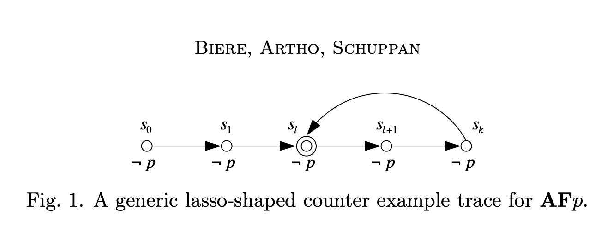
There is an LTL model checking algorithm whose running time depends linearly on the size of the Kripke structure and exponentially on the length of the LTL formula (Lichtenstein and Pnueli 1985). This is done by translating an LTL specification \(\psi\) into a Büchi automata \(B_{\psi}\) over the alphabet \(2^A\) (where \(A\) is the set of atomic propositions) such that for all Kripke structures \(K\) and infinite paths \(\pi\), the infinite word \(L(\pi)\) is accepted by \(B_{\psi}\) iff \(\pi\) is a counterexample of \(\psi\) in \(K\). The size of the automaton \(B_{\psi}\), though, can be exponential in the length of the formula \(\psi\).
More precisely, we translate the negation of our property \(\neg \psi\) into a Buchi automaton, and then consider the product of this automaton with our original system \(K \times B_{\neg \psi}\). The problem then reduces to checking whether there are any accepting runs in \(K \times B_{\neg \psi}\). Recall that an accepting run in a (deterministic) Buchi automaton is any run that visits an accepting state infinitely often. A standard algorithm for checking existence of an accepting run consists of
Consider the automaton as a directed graph and decompose it into its strongly connected components (SCCs).
Run a search to find which SCCs are reachable from the initial state
Check whether there is a non-trivial SCC (i.e. consists of \(\geq 1\) vertex) that is reachable and contains an accepting state.
Technically, the LTL model checking problem is PSPACE-complete (Sistla and Clarke 1985), but it’s worth keeping in mind that in practice the limiting complexity factor is usually the size of a system’s state space, rather than the size of the temporal specification. (TODO: why PSPACE?)
Safety checking (e.g. checking invariants) amounts to reachability analysis on the state graph of a transition system/Kripke structure. It turns out we can apply the same verification approach to liveness properties, motivated by the fact that violations to liveness properties in finite systems are lasso-shaped i.e. they consist of a prefix that leads to a loop. The problem then becomes how to detect such a loop. In the translation given in (Biere, Artho, and Schuppan 2002b), the loop is found by saving a previously visited state and later checking whether the current state already occurred.
Abstraction, in the context of model checking, is generally aimed at reducing the size of the state space in an attempt to remove details that are irrelevant to the property being verified (Dams and Grumberg 2018). That is, broadly, abstraction is a fundamental tool in tackling the “state explosion” problem.
In general, an abstraction framework defines a set of concrete objects and abstract objects and a definition of how to map between them. For model checking, we typically use Kripke structures as our concrete objects. Recall that a Kripe structure \(M=(AP,S,I,R,L)\) is defined as
a set \(AP\) of atomic propositions
a set of states \(S\)
a set of initial states \(I \subseteq S\)
a transition relation \(R \subseteq S \times S\)
a labeling function \(L : S \rightarrow 2^{AP}\)
To define a notion of abstraction for Kripke structures, we define a few standard relations between two structures \(M_1\) and \(M_2\). Simulation is a preorder (a reflexive and transitive partial order) in which the larger structure may have more behaviors, but possibly fewer states and transitions.
Let \(M_1=(AP_1,S_1,I_1,R_1,L_1)\) and \(M_2=(AP_2,S_2,I_2,R_2,L_2)\) be Kripke structures such that \(AP_2 \subseteq AP_1\). A relation \(H\) is a simulation relation from \(M_1\) to \(M_2\) if for every \(s_1 \in S_1\) and \(s_2 \in S_2\) such that \(H(s_1,s_2)\), both of the following conditions hold:
\(\forall p \in AP_2 : p \in L_1(s_1) \iff p \in L_2(s_2)\)
\(\forall t_1 \in S_1 : R_1(s_1,t_1) \Rightarrow \exists t_2 : (R_2(s_2,t_2) \wedge H(t_1,t_2))\)
Note that it is helpful to visually illustrate these conditions e.g. if there is a (blue) transition \(s_1 \rightarrow s_1'\) in system \(M_1\), and states \(s_1,s_2\) are related via the simulation relation \(H\), then there must exist a (red) transition \(s_2 \rightarrow s_2'\) such that \((s_1',s_2') \in H\).
| \(\textcolor{blue}{s_1}\) | \(\overset{H}{\longrightarrow}\) | \(\textcolor{red}{s_2}\) |
| \(\textcolor{blue}{\downarrow}\) | \(\textcolor{red}{\downarrow}\) | |
| \(\textcolor{blue}{s_1'}\) | \(\overset{H}{\longrightarrow}\) | \(\textcolor{red}{s_2'}\) |
The second condition states that for every transition of the “smaller” (i.e. more concrete) system \(M_1\), there must exist a corresponding transition in the larger system \(M_2\). We say that \(M_1\) is simulated by \(M_2\) (or \(M_2\) simulates \(M_1\)), denoted \(M_1 \leq M_2\), if there exists a simulation relation \(H\) from \(M_1\) to \(M_2\) such that \[\begin{aligned} \forall s_1 \in I_1 : (\exists s_2 \in I_2 : H(s_1,s_2))\end{aligned}\] For example, consider the concrete Kripke structure \(M\), modeling a mutual exclusion program where its atomic propositions \(AP=\{N_1,T_1,C_1,N_2,T_2,C_2,F_0\}\):
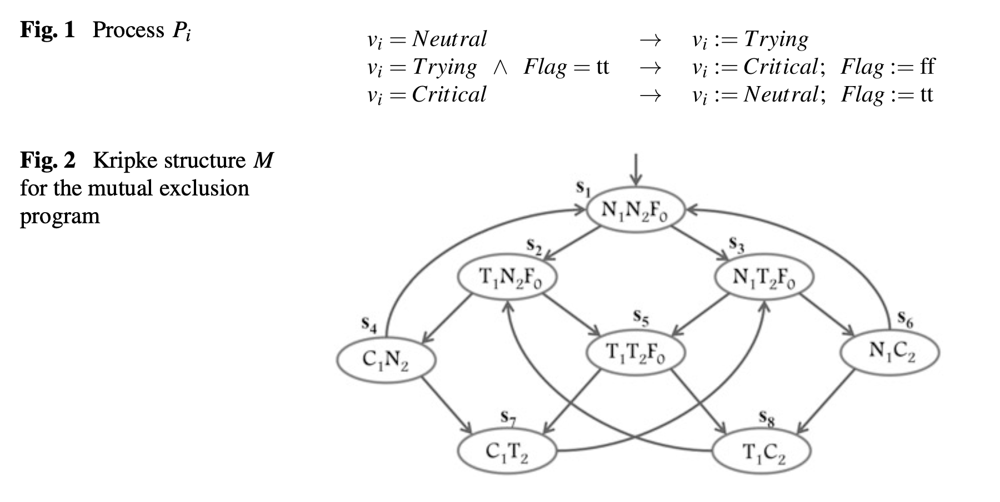
and then an abstraction of this structure, \(M_1\), with atomic propositions \(AP_1=\{C_1,C_2,F_0\}\):
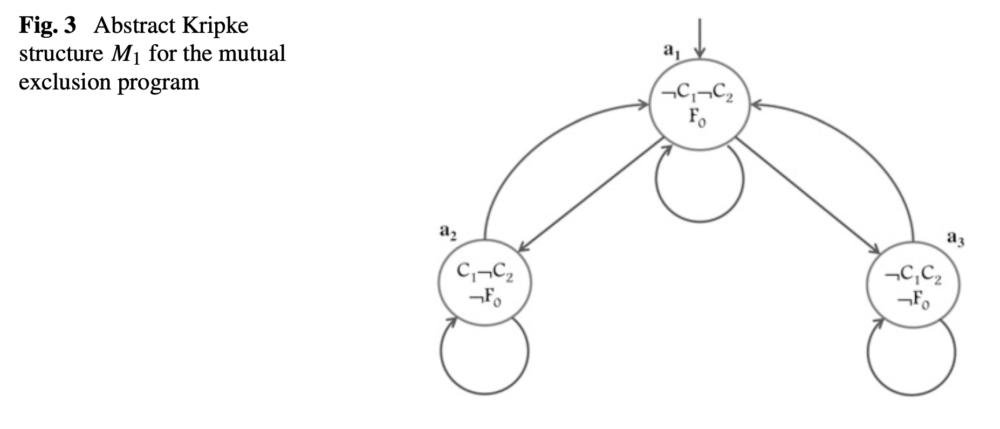
This abstraction basically only tracks whether a particular process is in the critical section or not, but ignores all other information. Note that \(AP_1 \subseteq AP\). A simulation relation \(H \subseteq S \times S_1\) from \(M\) to \(M_1\) can then be defined as \[\begin{aligned} H = \left\lbrace (s_1, a_1), (s_2, a_1), (s_3, a_1), (s_4, a_2), (s_5, a_1), (s_6, a_3), (s_7, a_2), (s_8, a_3) \right\rbrace\end{aligned}\]
One state is related to another by the bisimulation relation If they agree on their common atomic propositions and, in addition, for every successor of one state there is a corresponding successor of the other state, and vice versa.
One way to define an abstract model (Kripke structure) from a concrete one is via a concretization function \(\gamma\). We can define abstract Kripke structures by means of existential abstraction (Edmund M. Clarke, Grumberg, and Long 1994). Given a set \(\widehat{S}\) of abstract states, the concretization function \(\gamma : \widehat{S} \rightarrow 2^S\) indicates, for each abstract state \(\widehat{s}\), what set of concrete states are represented by \(\widehat{s}\). Similarly, there is a transition from abstract state \(\widehat{s}\) to another abstract state \(\widehat{s}'\) if there is a transition from a state represented by \(\widehat{s}\) to a state represented by \(\widehat{s}'\). Essentially, we just take every transition between concrete states and add it into our abstract transition system, based on the abstract states that represent those concrete state transitions.
Note that trace inclusion and trace equivalence notions of transition system similiarity or equivalence are often sufficient when concerned with linear time properties (i.e. LTL formulae) (Baier and Katoen 2008). Bisimulation and simulation can be considered primarily as relations that respect the branching time behavior. Bisimulation, for example, is a stronger notion than trace equivalence. That is, if two systems \(TS_1\) and \(TS_2\) are bisimilar, then they admit the same set of traces. And so, these systems also fulfill the same linear time properties.
Regardless of how we choose our abstraction, our abstract model \(\widehat{M}\) generally contains less information than the concrete model \(M\), and so model checking \(\widehat{M}\) may produce incorrect results. If a universal property is true in \(\widehat{M}\) then it is also true in \(M\), but if the abstract model produces an error, the concrete model may still be correct.
For example consider the following “traffic light” model and a simple abstraction of it
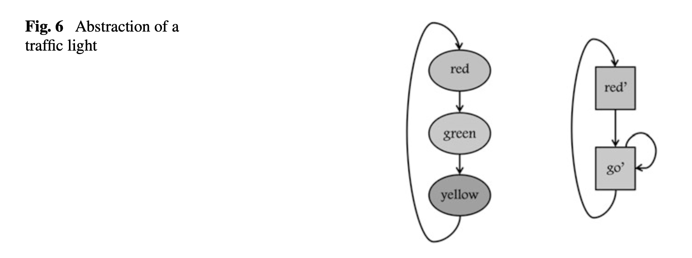
If we wanted to check the universal CTL property \(\textbf{AGAF}(IsRed)\) (i.e. along all paths, \(IsRed\) holds infinitely often), this clearly holds in the concrete traffic light model, but fails in the abstract model. When an abstract counterexample does not correspond to any concrete counterexample, we call it spurious.
Consider another example of a spurious counterexample, shown as follows:
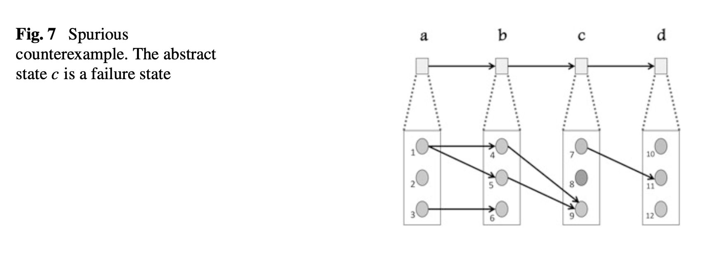
in this case, reachability of state 11 is not preserved by the abstraction. That is, it is not reachable in the lower level system, but it is reachable in the abstract system (consisting of abstract states \(\{a,b,c,d\}\)).
The framework of counterexample-guided abstraction refinement (CEGAR) deals with this issue. The main steps of CEGAR are as follows:
Given a concrete model \(M\) and some universal temporal formula to check, \(\psi\), generate an initial abstract model \(\widehat{M}\).
Model check \(\widehat{M}\) with respect to \(\psi\). If \(\widehat{M}\) satisfies \(\psi\), then conclude that the concrete model satisfies \(\psi\) and terminate. If a counterexample \(\widehat{T}\) is found, check whether it is also a counterexample in the concrete model.
If it is, conclude that the concrete model does not satisfy the formula and stop.
Otherwise, the counterexample is spurious, and proceed to step 3.
Refine the abstract model, \(\widehat{M}\), so that \(\widehat{T}\) will not be included in the new, refined abstract model. Go back to step 2.
Note that refinement is typically done by partitioning an abstract state. That is, the set of concrete states represented by the abstract state is partitioned
If we discover an abstract counterexample \(\widehat{T}\), we need some way to check if this is a real counterexample in the concrete model. Assume that \(\widehat{T}\) is a path \(\widehat{s_1},\dots, \widehat{s_n}\) starting at the initial abstract state \(\widehat{s_1}\). We can extend the concretization function \(\gamma\) to sequences of abstract states as follows: \(\gamma(\widehat{T})\) is the set of concrete paths defined as: \[\begin{aligned} \gamma(\widehat{T}) = \left\lbrace \langle s_1,\dots,s_n \rangle \mid \bigwedge_{i=1}^n s_i \in \gamma(\widehat{s_i}) \wedge I(s_1) \wedge \bigwedge_{i=1}^n R(s_i,s_{i+1}) \right\rbrace\end{aligned}\] Then, we need an algorithm to compute a sequence of sets of states that correspond to \(\gamma({\widehat{T}})\). We let \(S_1 = \gamma(\widehat{s_1}) \cap I\), and then define \[\begin{aligned} S_i := Image(S_{i-1}, R) \cap \gamma(\widehat{s_i})\end{aligned}\] where \(Image(S_{i-1}, R)\) is the set of successors, in \(M\), of the states in \(S_{i-1}\). Basically, we just want to symbolically execute concrete model, starting from the concretized version of the initial abstract counterexample state, and, at each step, check whether there is some concrete state in this image set that corresponds to the set of states from the abstract counterexample. We can formalize this into the following lemma. Specifically, the following are equivalent:
The path \(\widehat{T}\) corresponds to a concrete counterexample.
The set \(\gamma(\widehat{T})\) of concrete paths is non-empty.
For all \(1 \leq i \leq n, S_i \neq \emptyset\).
Note that checking whether a counterexample is spurious involves computations on the concrete model.
An alternative to the CEGAR based approach (introduced shortly after the initial CEGAR publication) is to rely more directly on a SAT solver for performing abstraction. A main idea is to do bounded model checking and then use proofs of unsatisfiability in this case to provide an explanation of correctness, and to help us generate an abstraction for proving a property in the unbounded case. Using such a proof to generate an abstraction is called proof-based abstraction (Kenneth L. McMillan and Amla 2003).
In the initial work of (Kenneth L. McMillan and Amla 2003) (appeared in TACAS 2003, April), verification of a system \(M\) is done by performing bounded model checking of \(M\) for a fixed bound \(k\). If an error is found for this bound, then we’re done, since a counterexample has been found. Otherwise, the SAT solver can return a (resolution) proof of unsatisfiability. This proof is used to generate an abstraction, \(M'\), of \(M\) by seeing what clauses of the encoding of \(M\) are actually used in the proof (see (Kenneth L. McMillan and Amla 2003) for details). Then, unbounded model checking is performed on the abstract model \(M'\), which should in theory now be much cheaper since \(M'\) has been abstracted from \(M\). If model checking determines that there are no error traces in \(M'\), then we are done. Otherwise, if model checking determines that \(M'\) does have an error run, then we know its length \(k'\) is greater than \(k\). Thus, we then restart the procedure with \(k'\) (or, generally, any value larger than \(k'\))
Slghtly subsequent work by McMillan (K. L. McMillan 2003) (appeared in CAV 2003, July) presented an extension of this approach that makes use of interpolation for doing abstraction with a SAT solver. Essentially this uses a similar bounded model checking approach and then extracts an interpolant from a bounded unsatisfiability proof to compute an abstraction.
The standard bounded model checking unrolling is a constraint of the following basic form:
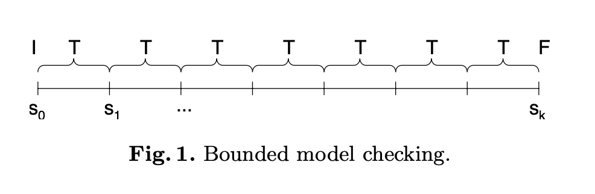
The idea of the interpolation based approach is to partition the path constraint into two sets \(A\) and \(B\):
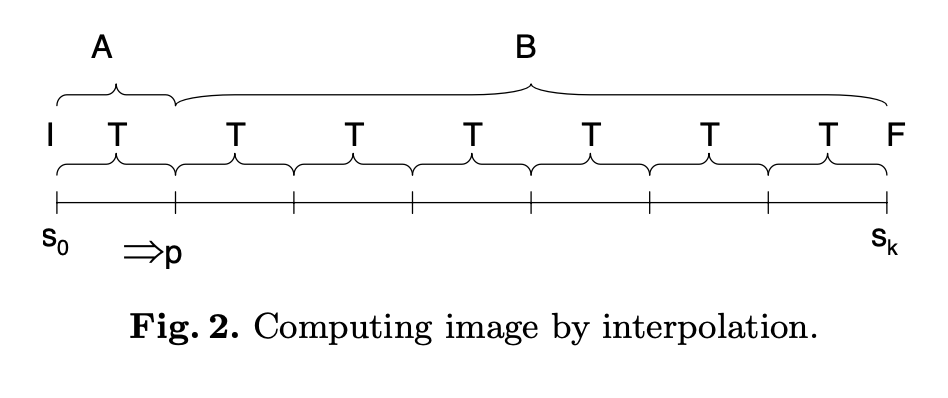
Then, if we produce a proof of unsatisfiability of the whole unrolling constraint, we derive an interpolant \(P\) of the pair \((A,B)\), where the common variables of \(A\) and \(B\) are exactly those variables representing state \(s_1\), in the sample diagram above. Note that an interpolant \(P\) for two formulas \(A,B\) is one such that
\(A \Rightarrow P\)
\(P\) refers only to the common variables of \(A\) and \(B\)
\(P \wedge B\) is unsatisfiable
By this, we can know that \(P\) is implied by the initial condition and by the first transition constraint, so it represents some approximation of all 1-step reachable states (i.e. it is an over-approximation of the forward image of \(I\)). Moreover, \(P\) and \(B\) are unsatisfiable, meaning that no state satisfying \(P\) can reach a final state in \(k-1\) steps. This over-approximate image operation can then be iterated to compute an over-approximation of the reachable states.
What is the difference between abstracting the entire system (e.g. the transition relation) and model checking that (like in CEGAR) vs. coming up with an abstraction of the reachable states and checking for inductiveness? Are these two approaches different but related in some way? Are there advantages to one over the other?
IC3/PDR (Aaron R. Bradley 2011) uses a SAT solver to make simple induction queries, from which it generates counterexamples to induction (CTIs) that it then generalizes into strengthening lemmas. Furthermore, it makes uses of previously accumulated lemmas to make the approach “incremental” i.e. it can check for inductiveness of a candidate lemma in the context of previously discovered lemmas. Some of the foundational ideas for this approach go back to some earlier work of Manna-Bradley (Aaron R. Bradley and Manna 2007).
Note some basic facts about inductive invariants and counterexamples to induction. If a property \(S\) is a true invariant of your system, but is not inductive, then there will exist some CTIs i.e. states that start in \(S\) but leave \(S\) via some state transition.
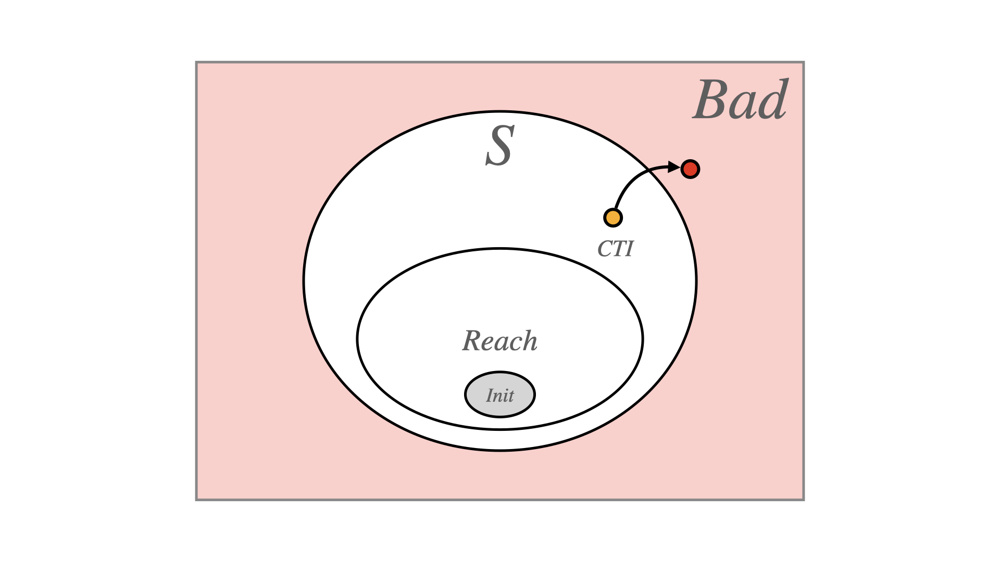
In the case where \(S\) is not a true invariant of your system (meaning your system violates \(S\)), but the initial states satisfy \(S\), then there must be some CTI of \(S\) (call it \(CTI^*\)) that starts in \(S \wedge Reach\) and transitions to a state in \(\neg S \wedge Reach\) (i.e., it reaches a bad state). There may be other CTIs of \(S\) that still start in an unreachable state within \(S\) and leave \(S\) as in the prior “safe” case. But, in the unsafe case, we can imagine the \(CTI^*\) state as being one to find if we actually want to discover the bug in this system. And clearly, we know that if the bad state that is actually reachable from \(Init\), then there must be a backwards path from that state back to \(Init\).
So, if we try to refine \(S\) by eliminating each \(CTI^*\) in this path, then we should eventually end up with a “CTI” that is an initial state, indicating that we’ve found the bug. That is, we’ve refined \(S\) to cut out all non-initial states of the buggy path. We can alternatively think of this through the lens of simple bug-finding via backwards reachability i.e., start from states in \(\neg S\) and try to find paths from there that lead back to the initial states.
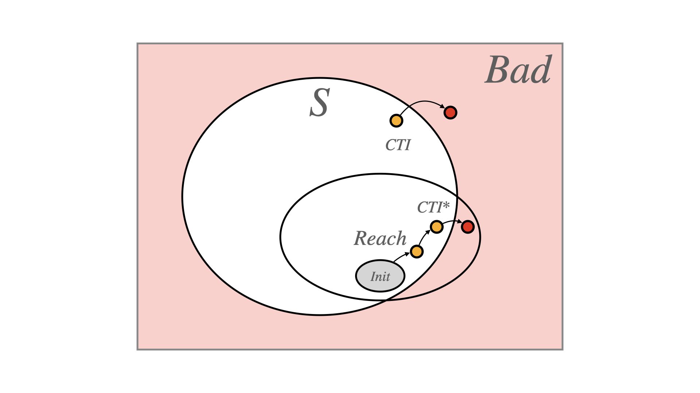
Most of safety verification centers around inference of suitable inductive invariants (Manna and Pnueli 1995). There are many techniques for doing this e.g. some developing in the context of sequential programs for loop invariant synthesis, and other model checking techniques like IC3/PDR (Aaron R. Bradley 2011) that try to directly synthesize an inductive invariant.
Houdini (Flanagan and Leino 2001) is an algorithm developed in the context of Java program verification that, given a set of predicates \(P\), finds the largest subset of \(P\) that is inductive. The basic algorithm, given a set of predicates \(P\) and program transition relation \(T\), initializes \(P_H := P\), and then checks the induction condition \[\begin{aligned} \neg (P_H \wedge T \wedge P_H')\end{aligned}\] If this is satisfiable, then some CTIs exist for \(P_H\), and the verifier checks which predicates in \(P_H\) were verified in the post-state, and removes these predicates from \(P_H\). It repeats this loop until the predicate set \(P_H\) is made inductive, giving the largest/maximal (and strongest) inductive subset of \(P\), if one exists.
We can view this as a kind of monotonic weakening procedure i.e. every time we may throw out some conjuncts, weakening the overall predicate until we find something that is inductive, giving the strongest inductive invariant over this predicate set.
Note that this basic algorithm to some extent depends on the size of the predicate set. When having a grammar with a large number of predicates e.g. as generated by a template, this can become an infeasible approach.